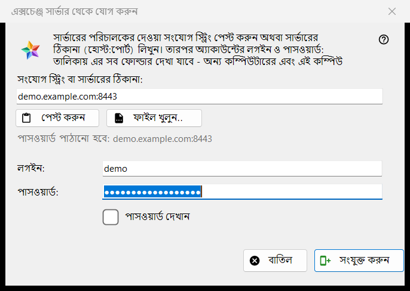
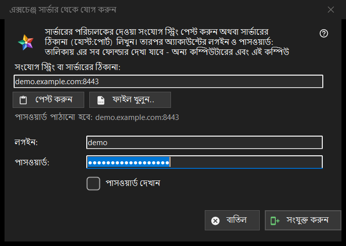

এক্সচেঞ্জ সার্ভার থেকে যোগ করুন
এটি কীসের জন্য
এই কম্পিউটারকে একটি এক্সচেঞ্জ সার্ভারের অ্যাকাউন্টে যুক্ত করে, যাতে সেই অ্যাকাউন্টের সব ডিভাইসের ফোল্ডার রিসোর্স তালিকায় দেখা যায়। এটি রিসোর্স তালিকার আমার ডিভাইস অংশের এক্সচেঞ্জ সার্ভার থেকে যোগ করুন.. বোতাম থেকে খোলে, এবং যখন আপনি কোনো সংযোগ স্ট্রিং বা ফাইল ভিউয়ারে ফেলেন বা ফোল্ডার বাক্সে টাইপ করেন তখনও।


এই ক্রমে
- সার্ভারের অপারেটরের দেওয়া সংযোগ স্ট্রিং পেস্ট করুন, ঠিকানা host:port আকারে টাইপ করুন, অথবা ফাইল খুলুন.. চাপুন।
- লাইনটি (পাসওয়ার্ড পাঠানো হবে: ..) দেখুন: ওই ঠিকানাই একমাত্র জায়গা যেখানে পাসওয়ার্ড যায়।
- লগইন ও পাসওয়ার্ড লিখুন।
- সংযুক্ত করুন চাপুন।
- প্রোগ্রাম সার্ভারের সার্টিফিকেট নিয়ে জিজ্ঞেস করলে ফিঙ্গারপ্রিন্টটি অপারেটরের বলা ফিঙ্গারপ্রিন্টের সঙ্গে মেলান।
উপাদানসমূহ
সংযোগ স্ট্রিং বা ঠিকানা
প্রথম বাক্সটি একটি সংযোগ স্ট্রিং (যা FMSEXCH1: দিয়ে শুরু হয়) বা host:port আকারে ঠিকানা নেয়। পেস্ট করুন সেটি ক্লিপবোর্ড থেকে ভরে, টেক্সট থেকে বা QR কোডের ছবি থেকে, আর ফাইল খুলুন.. একটি .fmsexch ফাইল বা QR ছবি পড়ে। পেস্ট শুধু ফর্ম ভরে: সংযুক্ত করুন চাপার আগে কিছুই পাঠানো হয় না। বাক্সের নিচের লাইনটি দেখায় পাসওয়ার্ড কোথায় যাবে; ওয়েব ঠিকানা, ফোল্ডার কোড বা নষ্ট স্ট্রিং সেখানে সহজ ভাষায় প্রত্যাখ্যাত হয়।
লগইন ও পাসওয়ার্ড
স্ট্রিংয়ে লগইন থাকলে লগইন ঘরটি তা থেকে ভরে। পাসওয়ার্ড ঢাকা থাকে; পাসওয়ার্ড দেখান সেটি দেখায়। সংযুক্ত করুন চাপলে প্রথম বাইট কম্পিউটার ছাড়ার আগেই পাসওয়ার্ড বাক্স খালি করা হয়। অবস্থা লাইন অগ্রগতি দেখায় এবং ব্যর্থ হলে কারণ: মেলেনি এমন লগইন বা পাসওয়ার্ড, অনেক বেশি চেষ্টা, বা সাড়া না দেওয়া সার্ভার।
একটি আমন্ত্রণ স্ট্রিং
যে স্ট্রিং একটি আমন্ত্রণ, সেটি আগে থেকেই সার্ভারের নাম বলে এবং উইন্ডোকে অ্যাকাউন্ট তৈরির অবস্থায় নেয়: পাসওয়ার্ড আরেকবার ঘর এবং পাসওয়ার্ড নিয়মের একটি টীকা দেখা যায় (কমপক্ষে 10 অক্ষর, একটি বড় ও একটি ছোট ল্যাটিন অক্ষর এবং একটি সংখ্যা), আর বোতামের নাম হয় অ্যাকাউন্ট তৈরি করুন। নিয়ম নিয়ে শেষ কথা সার্ভারের।
সার্ভারের সার্টিফিকেট
সার্টিফিকেট অজানা হলে একটি প্রশ্ন তার ফিঙ্গারপ্রিন্ট দেখায় এবং জিজ্ঞেস করে সার্ভারকে বিশ্বাস করে মনে রাখা হবে কি না; ডিফল্ট উত্তর না। স্ট্রিং কোনো ফিঙ্গারপ্রিন্টের নাম বললে এবং সার্ভার অন্য একটি দেখালে দুটোই দেখানো হয়, কিছুই মনে রাখা হয় না এবং কোনো পাসওয়ার্ড পাঠানো হয় না।
আবার সাইন-ইন
বিদ্যমান সার্ভার এন্ট্রির জন্য আবার সাইন-ইন করতে খোলা হলে উইন্ডো ঠিকানা ও লগইন শুধু-পড়ার আকারে দেখায়, আর ওই এন্ট্রির মনে রাখা ফিঙ্গারপ্রিন্টই বিশ্বাসের ভিত্তি।